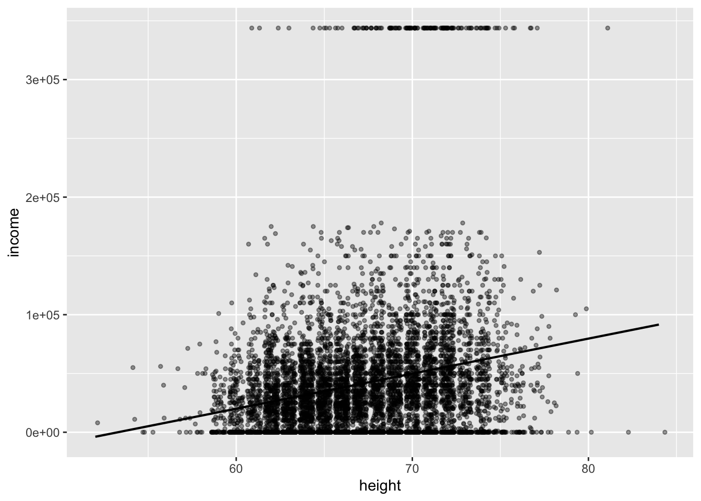

library(vtable)
library(tidyverse)Er det høyde som bestemmer inntekt?
1 Beskrivelse av data
Datasettet er kalt heights og er en del av pakken modelr, Wickham (2020), som er en utvidelspakke for statistikksystemet R, R Core Team (2021).
2 Kode
Følgende «chunk» er kode som samtlige grupper bør kjøre rett etter setup chunk-en slik at vi jobber med samme data og har samme variabelnavn.
hoyde <- modelr::heights
hoyde <- hoyde %>%
mutate(
bmi = weight * 0.4536/(height * 2.54/100)^2,
married = fct_collapse(
.f = marital,
married = "married",
other_level = "not married"
),
edu_fac = cut(
x = education,
breaks = c(0, 12, 14, 16, 21),
labels = c("not_hs", "not_cc", "not_col", "col_plus"),
right = FALSE
)
) |>
# reorganiserer data s.a. de fire faktor-variablerne kommer
# lengst til høyre
select(income:age, education:bmi, everything()) |>
# Dropper marital og education siden disse ikke skal brukes
select(-education, -marital)
# Inntekt lik 0
hoydeZeroInc <- hoyde |>
filter(income == 0)
# «Normal» inntekt
hoydeNormInc <- hoyde |>
filter(income > 0 & income < 343830)
hoydeHighInc <- hoyde |>
filter(income == 343830)3 Gjennomgang av koden
Her følger en gjennomgang av koden ovenfor steg for steg. I tillegg gis noen eksempler på bruk av vt() og st() fra pakken vtable.
Vi starter med å lese inn datasettet.
hoyde <- modelr::heightsVi kan så bruke st() fra vtable for å sjekke datasettet (merk at dere vil se en annen tabell hvis dere har kjørt hele kode-blokken ovenfor).
hoyde |> st()| Variable | N | Mean | Std. Dev. | Min | Pctl. 25 | Pctl. 75 | Max |
|---|---|---|---|---|---|---|---|
| income | 7006 | 41204 | 55892 | 0 | 166 | 55000 | 343830 |
| height | 7006 | 67 | 4.1 | 52 | 64 | 70 | 84 |
| weight | 6911 | 188 | 44 | 76 | 157 | 212 | 524 |
| age | 7006 | 51 | 2.2 | 47 | 49 | 53 | 56 |
| marital | 7006 | ||||||
| ... single | 1124 | 16% | |||||
| ... married | 3806 | 54% | |||||
| ... separated | 366 | 5% | |||||
| ... divorced | 1549 | 22% | |||||
| ... widowed | 161 | 2% | |||||
| sex | 7006 | ||||||
| ... male | 3402 | 49% | |||||
| ... female | 3604 | 51% | |||||
| education | 6996 | 13 | 2.6 | 1 | 12 | 15 | 20 |
| afqt | 6744 | 41 | 29 | 0 | 15 | 65 | 100 |
Vi har altså 7006 observasjoner og 8 variabler. For variablene weight, education og afqt har vi NA-er.
Det har vært spekulert om observert lønnsmessig «høyde premium» egentlig er en skjult «vekt straff». Tanken er at det er en negativ sammenheng mellom høyde og overvekt og at arbeidsgivere er redd for at personer som strever med overvekt har større sjanse for å ha eller få alvorlig helseproblemer og at arbeidsgivere derfor anser disse arbeidstakerne som mindre produktive og derfor tilbyr lavere lønn. For å se om dette er tilfelle lager vi en ny variabel bmi («body mass index»). I tillegg lager vi en forenklet versjon av variabelen marital der vi bare skiller mellom married (TRUE) og not_married (FALSE).
bmi. I tillegg bruker vi funksjonen fct_collapse til å «klappe sammen» de fem kategorien i marital til bare to kategorier i variabelen married.
hoyde <- hoyde %>%
mutate(
bmi = weight * 0.4536/(height * 2.54/100)^2,
married = fct_collapse(
.f = marital,
married = "married",
other_level = "not married"
),Vi forenkler også variabelen education s.a. vi bare skiller mellom kategorien not_hs («Not High School Exam»; 0 ≤ education <12), not_cc («Not Community College»; 12 ≤ education <14) not_col («Not College»; 14 ≤ education < 16) og col_plus («4 years College or more»; education ≥ 16)
edu_fac = cut(
x = education,
breaks = c(0, 12, 14, 16, 21),
labels = c("not_hs", "not_cc",
"not_col", "col_plus"),
right = FALSE
)Det kan være hensiktmessig å samle kategorivariablene lengst til høyre i datasettet (f.eks blir resultatet av st()en noe ryddigere tabell).
select(income:age, education:bmi, everything())Vi kommer ikke til å bruke variablene education og marital så disse dropper vi.
marital og education så disse droppes fra datasettet.
select(-education, -marital)Hoyde med nye variabler:
hoyde |> vt(missing = TRUE)| Name | Class | Values | Missing |
|---|---|---|---|
| income | integer | Num: 0 to 343830 | 0 |
| height | numeric | Num: 52 to 84 | 0 |
| weight | integer | Num: 76 to 524 | 95 |
| age | integer | Num: 47 to 56 | 0 |
| afqt | numeric | Num: 0 to 100 | 262 |
| bmi | numeric | Num: 12.874 to 74.99 | 95 |
| sex | factor | 'male' 'female' | 0 |
| married | factor | 'married' 'not married' | 0 |
| edu_fac | factor | 'not_hs' 'not_cc' 'not_col' 'col_plus' | 10 |
4 Splitter i tre datasett
Til slutt deler vi hoyde inn i tre datasett, hhv. hoyde_inc_zero, hoyde_inc_norm og hoyde_inc_high. Vi vil analysere hoyde_inc_norm grundigst og så sjekke eventuelle funn opp mot hoyde_inc_zero og hoyde_inc_high.
hoyde inn i tre «subsets». Datasettet hoydeNormInc er det vi vil konsentrere oss om.
# Inntekt lik 0
hoydeZeroInc <- hoyde |>
filter(income == 0)
# «Normal» inntekt
hoydeNormInc <- hoyde |>
filter(income > 0 & income < 343830)
# Høy inntekt
hoydeHighInc <- hoyde |>
filter(income == 343830)5 Beskrivende statistikk for de tre datasettene
5.1 hoydeZeroInc
Datasettet hoydeZeroInc inneholder 1740 observasjoner. Vi har 0, 0, 26, 0, 78, 26, 0, 0, 8 manglende verdier (NA) for variablene income, height, weight, age, afqt, bmi, sex, married, edu_fac.
hoydeZeroInc |> st()| Variable | N | Mean | Std. Dev. | Min | Pctl. 25 | Pctl. 75 | Max |
|---|---|---|---|---|---|---|---|
| income | 1740 | 0 | 0 | 0 | 0 | 0 | 0 |
| height | 1740 | 66 | 4.1 | 55 | 63 | 69 | 84 |
| weight | 1714 | 187 | 49 | 76 | 153 | 215 | 524 |
| age | 1740 | 51 | 2.2 | 47 | 50 | 53 | 56 |
| afqt | 1662 | 29 | 26 | 0 | 7.5 | 44 | 100 |
| bmi | 1714 | 30 | 7.4 | 14 | 25 | 33 | 75 |
| sex | 1740 | ||||||
| ... male | 745 | 43% | |||||
| ... female | 995 | 57% | |||||
| married | 1740 | ||||||
| ... married | 705 | 41% | |||||
| ... not married | 1035 | 59% | |||||
| edu_fac | 1732 | ||||||
| ... not_hs | 497 | 29% | |||||
| ... not_cc | 835 | 48% | |||||
| ... not_col | 211 | 12% | |||||
| ... col_plus | 189 | 11% |
hoydeZeroInc |> vt()| Name | Class | Values |
|---|---|---|
| income | integer | Num: 0 to 0 |
| height | numeric | Num: 55 to 84 |
| weight | integer | Num: 76 to 524 |
| age | integer | Num: 47 to 56 |
| afqt | numeric | Num: 0 to 100 |
| bmi | numeric | Num: 14.293 to 74.99 |
| sex | factor | 'male' 'female' |
| married | factor | 'married' 'not married' |
| edu_fac | factor | 'not_hs' 'not_cc' 'not_col' 'col_plus' |
5.2 hoydeNormInc
Datasettet hoydeNormInc inneholder 5123 observasjoner. Vi har 0, 0, 69, 0, 184, 69, 0, 0, 2 manglende verdier (NA) for variablene income, height, weight, age, afqt, bmi, sex, married, edu_fac.
hoydeNormInc |> st()| Variable | N | Mean | Std. Dev. | Min | Pctl. 25 | Pctl. 75 | Max |
|---|---|---|---|---|---|---|---|
| income | 5123 | 46751 | 33286 | 45 | 23000 | 62000 | 178000 |
| height | 5123 | 67 | 4 | 52 | 64 | 70 | 80 |
| weight | 5054 | 188 | 43 | 78 | 159 | 212 | 480 |
| age | 5123 | 51 | 2.2 | 47 | 49 | 53 | 56 |
| afqt | 4939 | 44 | 28 | 0 | 20 | 68 | 100 |
| bmi | 5054 | 29 | 5.8 | 13 | 25 | 32 | 67 |
| sex | 5123 | ||||||
| ... male | 2526 | 49% | |||||
| ... female | 2597 | 51% | |||||
| married | 5123 | ||||||
| ... married | 2983 | 58% | |||||
| ... not married | 2140 | 42% | |||||
| edu_fac | 5121 | ||||||
| ... not_hs | 559 | 11% | |||||
| ... not_cc | 2349 | 46% | |||||
| ... not_col | 886 | 17% | |||||
| ... col_plus | 1327 | 26% |
hoydeNormInc |> vt()| Name | Class | Values |
|---|---|---|
| income | integer | Num: 45 to 178000 |
| height | numeric | Num: 52 to 80 |
| weight | integer | Num: 78 to 480 |
| age | integer | Num: 47 to 56 |
| afqt | numeric | Num: 0 to 100 |
| bmi | numeric | Num: 12.874 to 66.947 |
| sex | factor | 'male' 'female' |
| married | factor | 'married' 'not married' |
| edu_fac | factor | 'not_hs' 'not_cc' 'not_col' 'col_plus' |
5.3 hoydeHighInc
Datasettet hoydeHighInc inneholder 143 observasjoner. Vi har 0, 0, 0, 0, 0, 0, 0, 0, 0 manglende verdier (NA) for variablene income, height, weight, age, afqt, bmi, sex, married, edu_fac.
hoydeHighInc |> st()| Variable | N | Mean | Std. Dev. | Min | Pctl. 25 | Pctl. 75 | Max |
|---|---|---|---|---|---|---|---|
| income | 143 | 343830 | 0 | 343830 | 343830 | 343830 | 343830 |
| height | 143 | 71 | 3.1 | 61 | 69 | 72 | 81 |
| weight | 143 | 195 | 37 | 123 | 170 | 210 | 335 |
| age | 143 | 51 | 2.3 | 48 | 49 | 53 | 55 |
| afqt | 143 | 78 | 22 | 3.3 | 70 | 94 | 100 |
| bmi | 143 | 28 | 4.8 | 15 | 25 | 30 | 45 |
| sex | 143 | ||||||
| ... male | 131 | 92% | |||||
| ... female | 12 | 8% | |||||
| married | 143 | ||||||
| ... married | 118 | 83% | |||||
| ... not married | 25 | 17% | |||||
| edu_fac | 143 | ||||||
| ... not_hs | 2 | 1% | |||||
| ... not_cc | 11 | 8% | |||||
| ... not_col | 13 | 9% | |||||
| ... col_plus | 117 | 82% |
hoydeHighInc |> vt()| Name | Class | Values |
|---|---|---|
| income | integer | Num: 343830 to 343830 |
| height | numeric | Num: 61 to 81 |
| weight | integer | Num: 123 to 335 |
| age | integer | Num: 48 to 55 |
| afqt | numeric | Num: 3.283 to 100 |
| bmi | numeric | Num: 15.416 to 45.434 |
| sex | factor | 'male' 'female' |
| married | factor | 'married' 'not married' |
| edu_fac | factor | 'not_hs' 'not_cc' 'not_col' 'col_plus' |
6 Scatterplot for høyde og inntekt
Plot av høyde mot inntekt for normal-inntekter (større enn $0, mindre enn $343830). Vi har benyttet geom_jitter() som er en variant av geom_point().
hoyde |>
ggplot(
mapping = aes(
x = height,
y = income
)
) +
geom_jitter(
size = 1,
alpha = 0.40
) +
geom_smooth(
formula = y ~ x,
method = "lm",
colour = "black",
lwd = 0.75,
se = FALSE
)
hoydeNormInc |>
ggplot(
mapping = aes(
x = height,
y = income
)
) +
geom_jitter(
size = 1,
alpha = 0.40
) +
geom_smooth(
formula = y ~ x,
method = "lm",
colour = "black",
lwd = 0.75,
se = FALSE
)Er dette hele historien eller kan det være andre bakenforliggende variabler som styrer dette. Det skal vi forsøke å få et innblikk i vha. EDA
7 Lage histogram for to subsets
En teknikk som kan være aktuell i en EDA anlyse er å lage histogram av datene der dataene er delt opp i undrgrupper. Plasserer vi histogrammene i samme figur er de lettere å sammenligne.
Her illustreres denne teknikken ved å studere fordelingen av høyde for hhv. kvinner og menn. Vi starter med å regne ut gjennomsnittlig høyde og standardavvik for hhv. menn og kvinner. Disse parametrene vil vi bruke for å tegne inn normalfordelingskurver i samme plot.
meanHeightMale <- hoyde |>
filter(sex == 'male') %>%
select(height) |>
# konverterer en tibble med 3402 rekker og 1 kolonne
# til en vektor med 3402 elementer siden mean() forlanger en
# vektor som input
pull() |>
# finner gjennomsnittet av verdiene i vektoren
mean()
meanHeightFemale <- hoyde |>
filter(sex == 'female') %>%
select(height) |>
pull() |>
mean()
# standard deviation
sdHeightMale <- hoyde |>
filter(sex == 'male') |>
select(height) |>
pull() |>
sd()
sdHeightFemale <- hoyde |>
filter(sex == 'female') |>
select(height) |>
pull() |>
sd()Så genererer vi histogram og overliggende empirisk fordeling tegnet utfra gjennomsnittlig høyde og tilhørende standardavvik som vi har regnet ut ovenfor.
heights.
hoyde %>%
ggplot() +
### male ###
geom_histogram(
data = filter(hoyde, sex == "male"),
mapping = aes(x = height, y = after_stat(density)),
binwidth = 1, alpha = 0.3, colour = 'grey40', fill = 'grey40'
) +
geom_vline(
xintercept = meanHeightMale,
colour = 'grey40', lwd = 0.75, linetype = 3
) +
stat_function(
fun = dnorm,
args = list(mean = meanHeightMale, sd = sdHeightMale),
colour = 'grey40'
) +
# female
geom_histogram(
data = filter(hoyde, sex == "female"),
mapping = aes(x = height, y = after_stat(density)),
binwidth = 1, alpha = 0.7, colour = 'black', fill = 'grey40'
) +
stat_function(
fun = dnorm, args = list(mean = meanHeightFemale, sd = sdHeightFemale),
colour = 'black'
) +
geom_vline(
xintercept = meanHeightFemale, colour = 'grey40', lwd = 0.75, linetype = 3
) 
8 Oppgaven
Hver gruppe skal skrive et «mini-paper» over lesten:
- Innledning
- Litteraturgjennomgang utfra gruppens problemstilling.
- EDA av datasettet heights med utgangspunkt i problemstillingen angitt for hver gruppe nedenfor.
- Konklusjon
- Referanser
og lage en tilhørende presentasjon (10-15 min.) av resultatene.
8.1 Arbeidsform
Gruppene skal jobbe i et RStudio prosjekt koblet mot et Github repo.
8.2 Levering
Når ferdig inviter meg (agjest) inn i repo (oppe i Github). Jeg vil gjøre en pull, lage en ny gren ag. Foreslå eventuelle fiks/endringer og opprette et nytt dokument ag_comments.qmd med generelle kommentarer. Dette vil jeg gjøre tilgjengelig som en pull request på Github. Dere kan da se hva jeg forslår og eventuelt akseptere mine endringer.
8.3 Tips presentasjon
Enkleste måten å lage en presentasjon når paperet er ferdig er å lagre paperet med ett nytt navn, feks lagre paper.qmd som paper_pres.qmd. Så endre YAML header til en header som passer for presentasjon og så slette tekst/gjøre tekst om til punkter. Husk header nivå 2 gir ny slide. Plot, tabeller, kode etc. fra paper skal da være tilgjengelig i presentasjonen.
9 Problemstilling for hver gruppe
9.1 Gruppe 1
Sammenhengen mellom:
- utdanning og inntekt
- bruk edu_fac variabelen
- høyde og inntekt; facet mht. edu_fac
- utdanning og høyde
- Fordeling utdanning i hoydeZeroInc og hoydeHighInc
- Skiller obs. i hoydeZeroInc og hoydeHighInc seg fra hoydeNormInc mht. høyde og utdanning.
Noen referanser som kan være et utgangspunkt for litteraturgjennomgang: Bureau (n.d.); Case and Paxson (2008); Case, Paxson, and Islam (2009); Deaton and Arora (2009); Hübler (2015); Mitchell (2020); Ochsenfeld (2016) og published (2009)
9.2 Gruppe 2
Sammenhengen mellom kjønn og inntekt:
- høyde og inntekt
- scatterplot facet mht. kjønn.
- Bruk teknikken med hele datasettet i bakgrunnen
- Høyde menn/kvinner i hoydeZeroInc og hoydeHighInc. Skiller disse seg fra høyde menn/kvinner i hoydeNormInc.
- Har vi inntektsforskjeller mellom menn og kvinner som er like høye?
- Studer kategoriene 65, 66, 67 og 68 tommer høy (hvor vi både har menn og kvinner). Lag et subset for hver av de fire høydene og sjekk for forskjeller i inntekt mellom kjønn. Husk konklusjon.
- Er det markante kjønnsforskjeller i hoydeZeroInc og hoydeHighInc?
Noen referanser som kan være et utgangspunkt for litteraturgjennomgang: Aragão (n.d.); Bobbitt-Zeher (2007); Bureau (n.d.); Card, Cardoso, and Kline (2016); Hejase and Hejase (2020); Mitchell (2020); Nyirongo (n.d.); Ochsenfeld (2016); Petersen and Morgan (1995); Santos Silva and Klasen (2021); On-The-Economy-Blog (2020) og Gould, Schieder, and Geier (2016).
Sammenhengen mellom ansiennitet (alder) og inntekt:
- Er det noen sammenheng?
- Er det forskjeller mht. kjønn?
- Er det markante kjønnsforskjeller mht. alder i hoydeZeroInc, hoydeHighInc og hoydeNormInc?
Noen referanser som kan være et utgangspunkt for litteraturgjennomgang: Medoff and Abraham (1980), Dash, Bakshi, and Chugh (2017) og Mincer (1974)
9.3 Gruppe 3
Sammenhengen mellom inntekt og evnenivå (afqt). Tjener «smarte» personer mer?
- Sammenhengen mellom afqt og inntekt i hoydeNormInc
- aftq i hoydeZeroInc og hoydeHighInc
- Sammenhengen mellom afqt og inntekt, facet mht. kjønn
- Sammenhengen mellom edu_fac/education og afqt
- Sammenhengen mellom høyde og afqt
Referanser som kan være et utgangspunkt for litteraturgjennomgang: Zagorsky (2007); Bound, Griliches, and Hall (1986), Wolfinger (2019), Kanarek (2013), NLS (2023) og Iii and Spriggs (1996)
Sammenhengen mellom ansiennitet (alder) og inntekt:
- Er det noen sammenheng?
- Er det forskjeller mht. kjønn?
- Er det markante kjønnsforskjeller mht. alder i hoydeZeroInc, hoydeHighInc og hoydeNormInc?
Noen referanser som kan være et utgangspunkt for litteraturgjennomgang: Medoff and Abraham (1980), Dash, Bakshi, and Chugh (2017) og Mincer (1974)
9.4 Gruppe 4
Sammenhengen mellom gift/ugift og inntekt.
- Er det forskjell menn/kvinner?
- Varierer premie/straff for gift mann/kvinne med utdannelse?
- Er det noen sammenheng mellom gift/ugift og utdannelse?
- Er det noen sammenheng mellom bmi og gift/ugift?
Referanser som kan være et utgangspunkt for litteraturgjennomgang: On-The-Economy-Blog (2020); Vandenbroucke (n.d.) og Case and Paxson (2008)
9.5 Gruppe 5
Sammenheng mellom mbi og inntekt.
- sammenheng bmi og inntekt
- sammenheng bmi og inntektsforskjell mellom menn/kvinner
- sammenheng bmi og inntektsforskjell mellom menn/kvinner gitt gift/ugift
- sammenheng bmi og inntektsforskjell mellom menn/kvinner gitt edu_fac
Referanser som kan være et utgangspunkt for litteraturgjennomgang: Böckerman et al. (2019); Caliendo and Gehrsitz (2016); Cawley (2015); Edwards, Bjørngaard, and Minet Kinge (2021); Han, Norton, and Stearns (2009); Hildebrand and Kerm (2010); Kan and Lee (2012); Lee (2017); Sargent and Blanchflower (1994); “The Impact of Obesity on Wages | Journal of Human Resources” (n.d.) og “The Wage Effects of Obesity: A Longitudinal Study - Baum - 2004 - Health Economics - Wiley Online Library” (n.d.)
10 Referanser
Aragão, Carolina. n.d. “Gender Pay Gap in U.S. Hasn’t Changed Much in Two Decades.” Pew Research Center. Accessed October 6, 2023.
Bobbitt-Zeher, Donna. 2007. “The Gender Income Gap and the Role of Education.” Sociology of Education 80 (1): 1–22.
Böckerman, Petri, John Cawley, Jutta Viinikainen, Terho Lehtimäki, Suvi Rovio, Ilkka Seppälä, Jaakko Pehkonen, and Olli Raitakari. 2019. “The Effect of Weight on Labor Market Outcomes: An Application of Genetic Instrumental Variables.” Health Economics 28 (1): 65–77.
Bound, John, Zvi Griliches, and Bronwyn H. Hall. 1986. “Wages, Schooling and IQ of Brothers and Sisters: Do the Family Factors Differ?” International Economic Review 27 (1): 77–105.
Bureau, US Census. n.d. “Among the Educated, Women Earn 74 Cents for Every Dollar Men Make.” Census.gov. https://www.census.gov/library/stories/2019/05/college-degree-widens-gender-earnings-gap.html. Accessed October 6, 2023.
Caliendo, Marco, and Markus Gehrsitz. 2016. “Obesity and the Labor Market: A Fresh Look at the Weight Penalty.” Economics & Human Biology 23 (December): 209–25.
Card, David, Ana Rute Cardoso, and Patrick Kline. 2016. “Bargaining, Sorting, and the Gender Wage Gap: Quantifying the Impact of Firms on the Relative Pay of Women *.” The Quarterly Journal of Economics 131 (2): 633–86.
Case, Anne, and Christina Paxson. 2008. “Stature and Status: Height, Ability, and Labor Market Outcomes.” Journal of Political Economy 116 (3): 499–532.
Case, Anne, Christina Paxson, and Mahnaz Islam. 2009. “Making Sense of the Labor Market Height Premium: Evidence from the British Household Panel Survey.” Economics Letters 102 (3): 174–76.
Cawley, John. 2015. “An Economy of Scales: A Selective Review of Obesity’s Economic Causes, Consequences, and Solutions.” Journal of Health Economics 43 (September): 244–68.
Dash, Mihir, Suprabha Bakshi, and Aarushi Chugh. 2017. “The Relationship Between Work Experience and Employee Compensation: A Case Study of the Indian IT Industry.” Journal of Applied Management and Investments 6 (1): 5–10.
Deaton, Angus, and Raksha Arora. 2009. “Life at the Top: The Benefits of Height.” Economics & Human Biology 7 (2): 133–36.
Edwards, Christina Hansen, Johan Håkon Bjørngaard, and Jonas Minet Kinge. 2021. “The Relationship Between Body Mass Index and Income: Using Genetic Variants from HUNT as Instrumental Variables.” Health Economics 30 (8): 1933–49.
Gould, Elise, Jessica Schieder, and Kathleen Geier. 2016. “What Is the Gender Pay Gap and Is It Real?: The Complete Guide to How Women Are Paid Less Than Men and Why It Can’t Be Explained Away.” Economic Policy Institute. https://www.epi.org/publication/what-is-the-gender-pay-gap-and-is-it-real/.
Han, Euna, Edward C. Norton, and Sally C. Stearns. 2009. “Weight and Wages: Fat Versus Lean Paychecks.” Health Economics 18 (5): 535–48.
Hejase, Hussin J., and Ale J. Hejase. 2020. “Gender Discrimination: The Gender Wage Gap.” Journal of Economics and Economic Education Research 21 (1S): 1–4.
Hildebrand, Vincent, and Philippe Van Kerm. 2010. “Body Size and Wages in Europe: A Semi-Parametric Analysis.”
Hübler, Olaf. 2015. “Height and Wages.” In.
Iii, William, and William Spriggs. 1996. “What Does the AFQT Really Measure: Race, Wages, Schooling and the AFQT Score.” The Review of Black Political Economy 24 (June): 13–46.
Kan, Kamhon, and Myoung-Jae Lee. 2012. “Lose Weight for a Raise Only If Overweight: Marginal Integration for Semi-Linear Panel Models.” Journal of Applied Econometrics 27 (4): 666–85.
Kanarek, Jaret. 2013. “Youth Aptitude as a Predictor of Adulthood Income - CORE.” Undergaduate Economic Review, 1st series, 10.
Lee, Wang-Sheng. 2017. “Big and Tall: Does a Height Premium Dwarf an Obesity Penalty in the Labor Market?” Economics & Human Biology 27 (November): 289–304.
Medoff, James L., and Katharine G. Abraham. 1980. “Experience, Performance, and Earnings.” The Quarterly Journal of Economics 95 (4): 703–36.
Mincer, Jacob A. 1974. “Schooling, Experience, and Earnings.” NBER Books.
Mitchell, Travis. 2020. “2. Women’s Lead in Skills and Education Is Helping Narrow the Gender Wage Gap.” Pew Research Center’s Social & Demographic Trends Project.
NLS. 2023. “Aptitude, Achievement & Intelligence Scores | National Longitudinal Surveys.” https://www.nlsinfo.org/content/cohorts/nlsy79/topical-guide/education/aptitude-achievement-intelligence-scores.
Nyirongo, Venge. n.d. “Tackling Discriminatory Labour Practices, Labour Market Segmentation and Gender Pay Gaps.”
Ochsenfeld, Fabian. 2016. “The Gender Income Gap and the Roles of Education and Family Formation: A Scientific Replication of Bobbitt-Zeher (2007).” {{SSRN Scholarly Paper}}. Rochester, NY.
On-The-Economy-Blog. 2020. “Taking a Closer Look at Marital Status and the Earnings Gap.” https://www.stlouisfed.org/on-the-economy/2020/september/taking-closer-look-marital-status-earnings-gap.
Petersen, Trond, and Laurie A. Morgan. 1995. “Separate and Unequal: Occupation-Establishment Sex Segregation and the Gender Wage Gap.” American Journal of Sociology 101 (2): 329–65.
published, Robert Roy Britt. 2009. “Taller People Earn More Money.” Livescience.com. https://www.livescience.com/5552-taller-people-earn-money.html.
R Core Team. 2021. R: A Language and Environment for Statistical Computing. Vienna, Austria: R Foundation for Statistical Computing. https://www.R-project.org/.
Santos Silva, Manuel, and Stephan Klasen. 2021. “Gender Inequality as a Barrier to Economic Growth: A Review of the Theoretical Literature.” Review of Economics of the Household 19 (3): 581–614.
Sargent, James D., and David G. Blanchflower. 1994. “Obesity and Stature in Adolescence and Earnings in Young Adulthood: Analysis of a British Birth Cohort.” Archives of Pediatrics & Adolescent Medicine 148 (7): 681–87.
“The Impact of Obesity on Wages | Journal of Human Resources.” n.d. https://jhr.uwpress.org/content/XXXIX/2/451.short. Accessed October 6, 2023.
“The Wage Effects of Obesity: A Longitudinal Study - Baum - 2004 - Health Economics - Wiley Online Library.” n.d. https://onlinelibrary.wiley.com/doi/abs/10.1002/hec.881. Accessed October 6, 2023.
Vandenbroucke, Guillaume. n.d. “Married Men Sit Atop the Wage Ladder.” https://research.stlouisfed.org/publications/economic-synopses/2018/09/14/married-men-sit-atop-the-wage-ladder. Accessed October 6, 2023.
Wickham, Hadley. 2020. Modelr: Modelling Functions That Work with the Pipe. https://CRAN.R-project.org/package=modelr.
Wolfinger, Nicholas H. 2019. “Can Intelligence Predict Income?” Institute for Family Studies. https://ifstudies.org/blog/can-intelligence-predict-income.
Zagorsky, Jay L. 2007. “Do You Have to Be Smart to Be Rich? The Impact of IQ on Wealth, Income and Financial Distress.” Intelligence 35 (5): 489–501.